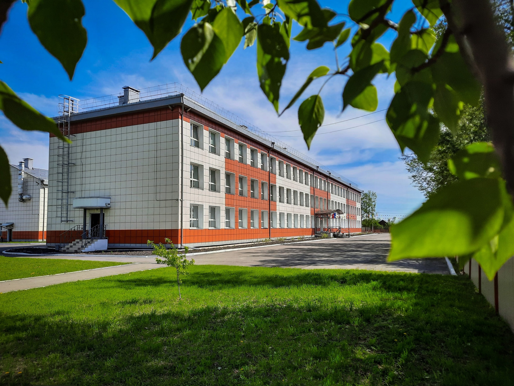
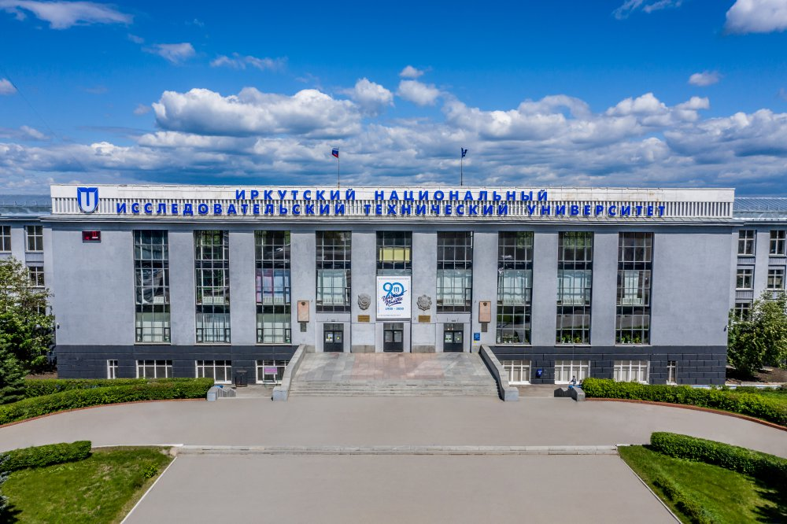

Обо мне
ФИО:Долбня Николай Витаельвич
Дата рождения: 30.07.2004
Место проживания: Иркутская область г. Иркутск ул. 5-я железнодорожная д. 64
Хобби
Игра на гитаре
Я самоучка,играю на гитаре с 15 лет, первая песня, которую я сыграл на гитаре была "Цой: Звезда по имени солнце".Играю до сих пор, крайней песней была "Любэ: А река течет"

Компьютерные игры
Играю в игры с 5 лет и играю до сих пор. Моими любимыми играми считается Трилогия Call of Duty: Modern Warfare
Образование

Школа
Начинал я свой путь школьника в 1 школе города Зима. Проучился я там до 7 класса, после мне пришлось перейти в лицей, из-за того, что 1 школу закрыли на ремонт. В лицее я проучился с 7 по 11 класс.

Университет
После 11 класса, я поступил в Политех на факультет "Информационная безопасность". Сейчас учусь на 2 курсе
Контакты
Email: siiper3007@gmail.com